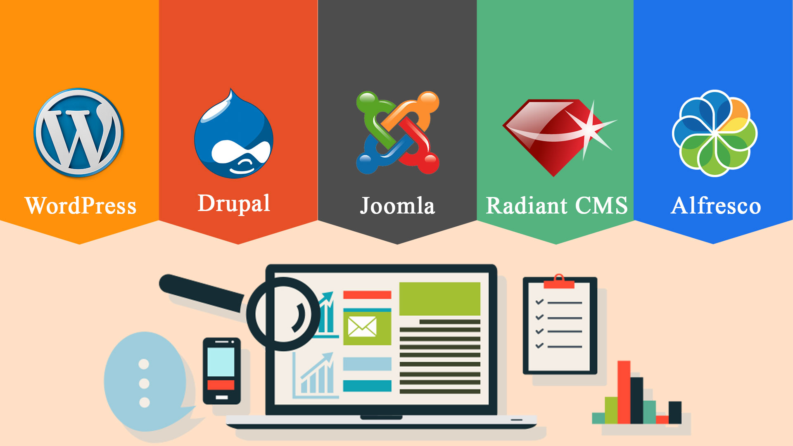

CMS
CMS significa Sistema de Gestión de Contenidos (Content Management System, por sus siglas en inglés). Es un software que permite a los usuarios crear, gestionar y modificar contenido en un sitio web sin necesidad de tener conocimientos técnicos especializados. Ejemplos populares de CMS incluyen WordPress, Joomla y Drupal. Estos sistemas proporcionan una interfaz fácil de usar para gestionar el contenido web, incluyendo texto, imágenes, videos y otros tipos de multimedia.
Que son los manejadores de contenido
Los manejadores de contenido, también conocidos como sistemas de gestión de contenidos (CMS), son aplicaciones o plataformas que permiten a los usuarios crear, editar, organizar y publicar contenido digital en un sitio web sin necesidad de conocimientos técnicos avanzados en programación.
Estos sistemas ofrecen diversas funcionalidades, como:
1. **Interfaz de usuario amigable**: Permite a los usuarios interactuar con el sistema de manera intuitiva, a menudo mediante editores de texto visuales (WYSIWYG - What You See Is What You Get).
2. **Gestión de medios**: Facilita la subida y gestión de imágenes, videos y otros archivos multimedia.
3. **Plantillas y temas**: Proporciona plantillas predefinidas para el diseño del sitio web, que pueden ser personalizadas según las necesidades del usuario.
4. **Extensiones y plugins**: Permiten añadir funcionalidades adicionales al sitio web, como formularios de contacto, tiendas en línea, foros, entre otros.
5. **Control de versiones**: Guarda versiones anteriores del contenido, permitiendo revertir cambios si es necesario.
6. **Gestión de usuarios**: Permite definir diferentes roles y permisos para los usuarios que administran el sitio.
Ejemplos populares de manejadores de contenido incluyen WordPress, Joomla, Drupal, Magento (para e-commerce) y Shopify.
Que bueno es un sistema de manejador de contenido
Un sistema de manejador de contenido (CMS) es extremadamente beneficioso por varias razones:
1. **Facilidad de uso**: La mayoría de los CMS tienen interfaces intuitivas y editores de texto visuales que permiten a los usuarios crear y modificar contenido sin necesidad de conocimientos técnicos avanzados.
2. **Ahorro de tiempo y costos**: Facilita la creación y actualización de contenido, lo que reduce la necesidad de contratar desarrolladores web para tareas básicas.
3. **Colaboración mejorada**: Permite a múltiples usuarios trabajar en el contenido simultáneamente, con la posibilidad de asignar diferentes roles y permisos.
4. **Flexibilidad y personalización**: Ofrece una amplia gama de temas y plugins que permiten personalizar el diseño y la funcionalidad del sitio web según las necesidades específicas del usuario.
5. **SEO amigable**: Muchos CMS incluyen herramientas y plugins para optimizar el contenido y mejorar el posicionamiento en motores de búsqueda (SEO).
6. **Actualizaciones y seguridad**: Los CMS populares reciben actualizaciones periódicas que mejoran la seguridad y añaden nuevas funcionalidades.
7. **Gestión de contenido multimedia**: Facilita la integración y gestión de imágenes, videos y otros archivos multimedia en el sitio web.
8. **Escalabilidad**: Un CMS puede adaptarse al crecimiento del sitio web, soportando desde pequeños blogs hasta grandes sitios de comercio electrónico.
9. **Comunidad y soporte**: Los CMS más populares tienen grandes comunidades de usuarios y desarrolladores que ofrecen soporte, recursos y actualizaciones constantes.
Que es un administrador de contenido
Un administrador de contenido es una persona o rol responsable de gestionar el contenido digital en un sitio web o plataforma en línea. Sus tareas y responsabilidades pueden variar dependiendo de la organización y el tipo de contenido que se maneje, pero generalmente incluyen:
1. **Creación de contenido**: Escribir, editar y publicar artículos, blogs, noticias, y otros tipos de contenido textual.
2. **Gestión de medios**: Subir, organizar y gestionar imágenes, videos, y otros archivos multimedia.
3. **Actualización de contenido**: Mantener el contenido actualizado, asegurándose de que la información sea precisa y relevante.
4. **Optimización SEO**: Implementar prácticas de optimización para motores de búsqueda (SEO) para mejorar la visibilidad del contenido en línea.
5. **Colaboración**: Trabajar con otros equipos, como diseñadores, desarrolladores y especialistas en marketing, para asegurar que el contenido esté alineado con los objetivos generales del sitio o la organización.
6. **Moderación de comentarios**: Revisar y moderar comentarios de usuarios en blogs, foros y redes sociales.
7. **Análisis y reportes**: Utilizar herramientas de análisis web para medir el rendimiento del contenido y hacer ajustes basados en métricas como tráfico, tasa de rebote, y conversiones.
8. **Gestión de calendario de contenidos**: Planificar y organizar un calendario editorial para asegurar un flujo constante de contenido nuevo y relevante.
9. **Cumplimiento de normativas**: Asegurarse de que el contenido cumpla con las leyes y regulaciones pertinentes, como derechos de autor y privacidad de datos.
10. **Capacitación y soporte**: Brindar apoyo y capacitación a otros miembros del equipo sobre el uso del CMS y las mejores prácticas de gestión de contenido.
Cuales son los principales gestores de un administrador de contenido
Los principales gestores de un administrador de contenido son las herramientas y sistemas que utiliza para llevar a cabo sus tareas de manera eficiente. Estos gestores incluyen:
1. **Sistemas de Gestión de Contenidos (CMS)**:
- **WordPress**: El CMS más popular del mundo, utilizado para blogs, sitios web corporativos, tiendas en línea y más.
- **Joomla**: Un CMS flexible que se usa para todo tipo de sitios web, desde pequeños hasta grandes portales.
- **Drupal**: Un CMS potente y altamente configurable, ideal para sitios web complejos y grandes organizaciones.
- **Magento**: Especializado en comercio electrónico, permite crear y gestionar tiendas en línea.
- **Shopify**: Una plataforma de comercio electrónico que facilita la creación y gestión de tiendas en línea.
2. **Herramientas de Gestión de Medios**:
- **Adobe Creative Cloud**: Incluye Photoshop, Illustrator y otros programas para crear y editar contenido multimedia.
- **Canva**: Una herramienta en línea para diseñar gráficos, presentaciones y otros contenidos visuales de manera fácil y rápida.
3. **Herramientas de Optimización para Motores de Búsqueda (SEO)**:
- **Yoast SEO**: Un plugin de WordPress que ayuda a optimizar el contenido para motores de búsqueda.
- **SEMrush**: Una herramienta de análisis SEO y marketing digital que permite investigar palabras clave, analizar la competencia y monitorizar el rendimiento.
- **Google Analytics**: Ofrece análisis detallados del tráfico web y el comportamiento de los usuarios.
4. **Herramientas de Colaboración y Gestión de Proyectos**:
- **Trello**: Una herramienta de gestión de proyectos basada en tableros y tarjetas que facilita la organización de tareas.
- **Asana**: Permite a los equipos planificar y coordinar proyectos y tareas.
- **Slack**: Una plataforma de mensajería que facilita la comunicación y colaboración entre equipos.
5. **Plataformas de Redes Sociales**:
- **Hootsuite**: Permite gestionar múltiples cuentas de redes sociales desde una sola plataforma.
- **Buffer**: Ayuda a programar publicaciones en varias redes sociales y analizar su rendimiento.
6. **Herramientas de Moderación de Contenidos**:
- **Disqus**: Un sistema de comentarios que se puede integrar en blogs y sitios web para gestionar y moderar comentarios.
- **Akismet**: Un plugin de WordPress que ayuda a filtrar comentarios de spam.
7. **Herramientas de Gestión de Calendarios de Contenidos**:
- **CoSchedule**: Permite planificar, organizar y ejecutar estrategias de contenido.
- **Google Calendar**: Útil para programar y coordinar fechas de publicación y eventos.
8. **Plataformas de Email Marketing**:
- **MailChimp**: Una herramienta para crear y gestionar campañas de email marketing.
- **Sendinblue**: Ofrece soluciones de marketing por correo electrónico, SMS y automatización de marketing.
Cómo funciona los sistemas de manejador de contenido
Los sistemas de gestión de contenidos (CMS) funcionan proporcionando una plataforma integrada que permite a los usuarios crear, editar, gestionar y publicar contenido digital de manera fácil y organizada. Aquí se detalla el funcionamiento general de un CMS:
### 1. **Interfaz de Usuario (UI)**
- **Dashboard (Tablero de control)**: El punto de entrada principal donde los usuarios acceden a todas las funciones del CMS.
- **Editor de contenido**: Una interfaz visual (a menudo WYSIWYG - What You See Is What You Get) que permite a los usuarios crear y editar contenido sin necesidad de conocimientos de programación.
### 2. **Gestión de Contenido**
- **Creación de contenido**: Los usuarios pueden crear artículos, páginas, blogs, productos, y otros tipos de contenido mediante el editor de texto.
- **Organización de contenido**: Permite categorizar, etiquetar y organizar el contenido en diferentes secciones o categorías del sitio web.
- **Medios**: Subir y gestionar imágenes, videos, documentos y otros archivos multimedia.
### 3. **Temas y Plantillas**
- **Temas**: Proporcionan el diseño visual del sitio web. Los usuarios pueden instalar y personalizar temas para cambiar la apariencia del sitio.
- **Plantillas**: Determinan el diseño de páginas específicas. Permiten a los usuarios definir cómo se muestra el contenido en diferentes partes del sitio.
### 4. **Extensiones y Plugins**
- **Plugins**: Añaden funcionalidades adicionales al CMS. Pueden ser módulos de SEO, formularios de contacto, galerías de imágenes, herramientas de seguridad, entre otros.
- **Widgets**: Pequeños bloques de contenido o funciones que se pueden añadir a diferentes áreas del sitio web, como barras laterales y pies de página.
### 5. **Gestión de Usuarios**
- **Roles y permisos**: Permite definir diferentes roles de usuario (administrador, editor, autor, suscriptor) y asignar permisos específicos a cada rol.
- **Acceso y seguridad**: Herramientas para gestionar el acceso al sitio, incluyendo autenticación de usuarios y medidas de seguridad como protección contra ataques de fuerza bruta.
### 6. **Publicación y Programación**
- **Publicación**: Los usuarios pueden publicar contenido inmediatamente o programar su publicación para una fecha y hora futuras.
- **Control de versiones**: Guarda versiones anteriores del contenido, permitiendo revertir a versiones anteriores si es necesario.
### 7. **Optimización para Motores de Búsqueda (SEO)**
- **Meta tags**: Campos para añadir títulos, descripciones y palabras clave para mejorar la visibilidad en los motores de búsqueda.
- **URL amigables**: Permite crear URL limpias y fáciles de leer que mejoran el SEO.
### 8. **Analítica y Reportes**
- **Integración con herramientas de análisis**: Integración con Google Analytics y otras herramientas para monitorizar el rendimiento del contenido y del sitio web.
- **Reportes**: Proporciona datos sobre el tráfico del sitio, las interacciones de los usuarios y otros indicadores clave de rendimiento (KPI).
### 9. **Actualizaciones y Mantenimiento**
- **Actualizaciones automáticas**: Muchos CMS ofrecen actualizaciones automáticas o fáciles de instalar para mantener el sistema seguro y actualizado.
- **Backups**: Herramientas para realizar copias de seguridad del sitio y del contenido para prevenir la pérdida de datos.
### Funcionamiento Básico del CMS:
1. **Instalación**: Se instala el CMS en un servidor web, lo cual puede hacerse manualmente o a través de instaladores automáticos que ofrecen muchos proveedores de hosting.
2. **Configuración Inicial**: Se configuran ajustes básicos como el título del sitio, la URL, la estructura de enlaces permanentes, y las configuraciones de idioma y zona horaria.
3. **Creación de Contenido**: Los usuarios crean y editan contenido mediante el editor de texto y suben medios como imágenes y videos.
4. **Personalización de Diseño**: Se seleccionan y personalizan temas y plantillas para definir la apariencia del sitio.
5. **Extensión de Funcionalidades**: Se instalan plugins para añadir funcionalidades adicionales según las necesidades del sitio.
6. **Publicación**: El contenido se publica y se hace visible para los visitantes del sitio web.
7. **Mantenimiento**: Se realizan actualizaciones y copias de seguridad regulares para asegurar el correcto funcionamiento del sitio.
Cuales son los manejadores de contenido de imagen
Los manejadores de contenido de imagen son herramientas y plataformas diseñadas para ayudar a los usuarios a gestionar, organizar, editar y publicar imágenes de manera eficiente. Estos sistemas son esenciales para fotógrafos, diseñadores gráficos, y cualquier organización que maneje grandes volúmenes de contenido visual. A continuación, se presentan algunos de los principales manejadores de contenido de imagen:
1. **Adobe Lightroom**
- **Funcionalidades**: Organización, edición y gestión de grandes volúmenes de imágenes. Incluye herramientas avanzadas de edición y ajustes no destructivos.
- **Uso**: Popular entre fotógrafos profesionales para el flujo de trabajo de edición y organización.
2. **Adobe Bridge**
- **Funcionalidades**: Gestión de archivos multimedia, visualización y organización de imágenes. Se integra bien con otras aplicaciones de Adobe.
- **Uso**: Utilizado por diseñadores y fotógrafos para organizar y gestionar grandes bibliotecas de imágenes y otros archivos multimedia.
3. **Google Photos**
- **Funcionalidades**: Almacenamiento en la nube, organización automática, búsqueda por palabras clave y reconocimiento facial.
- **Uso**: Ideal para usuarios personales y pequeñas empresas que necesitan una solución sencilla para gestionar y compartir imágenes.
4. **Apple Photos**
- **Funcionalidades**: Almacenamiento, organización y edición de imágenes. Sincronización con dispositivos Apple.
- **Uso**: Perfecto para usuarios de productos Apple que buscan una solución integrada para gestionar sus fotos.
5. **Flickr**
- **Funcionalidades**: Almacenamiento, organización, y compartición de imágenes. Comunidad activa para fotógrafos y aficionados.
- **Uso**: Adecuado para fotógrafos que quieren compartir sus trabajos y conectarse con otros en la comunidad.
6. **SmugMug**
- **Funcionalidades**: Almacenamiento seguro, galerías personalizables, venta de impresiones y descargas.
- **Uso**: Popular entre fotógrafos profesionales que necesitan una plataforma robusta para mostrar y vender sus trabajos.
7. **Pixpa**
- **Funcionalidades**: Creación de sitios web para fotógrafos, gestión de galerías, venta de fotos, y herramientas de marketing.
- **Uso**: Ideal para fotógrafos que desean construir un portafolio en línea y vender sus imágenes.
8. **Dropbox**
- **Funcionalidades**: Almacenamiento en la nube, organización y compartición de archivos.
- **Uso**: Utilizado por individuos y equipos para almacenar y compartir imágenes y otros tipos de archivos de manera colaborativa.
9. **Imgur**
- **Funcionalidades**: Almacenamiento y compartición de imágenes, galerías públicas, y comunidad de usuarios.
- **Uso**: Popular para compartir imágenes en línea de manera rápida y fácil, especialmente en redes sociales y foros.
10. **Zenfolio**
- **Funcionalidades**: Creación de sitios web de portafolio, galerías de clientes, venta de fotos y productos fotográficos.
- **Uso**: Usado por fotógrafos profesionales para gestionar su presencia en línea y vender sus imágenes.
11. **Piwigo**
- **Funcionalidades**: Software de galería de fotos de código abierto, personalización, gestión de permisos y organización.
- **Uso**: Ideal para usuarios que prefieren una solución auto-hospedada y personalizable para gestionar sus imágenes.
12. Photobucket
Funcionalidades: Almacenamiento, edición y compartición de imágenes, herramientas de creación de álbumes y slideshows.
Uso: Adecuado para usuarios que desean una solución completa para gestionar y compartir sus imágenes en línea
Cuál es el Cms más seguro
La seguridad de un CMS (Sistema de Gestión de Contenidos) depende de varios factores, incluyendo la frecuencia de actualizaciones, la calidad del código, la disponibilidad de plugins y temas seguros, y las prácticas de seguridad de los administradores del sitio. A continuación se describen algunos de los CMS más seguros y las razones por las que son considerados como tales:
### 1. **Drupal**
- **Seguridad**: Drupal es conocido por su enfoque robusto en la seguridad. Tiene un equipo de seguridad dedicado que revisa y responde rápidamente a las vulnerabilidades.
- **Control de acceso**: Ofrece configuraciones avanzadas de permisos y roles de usuario, permitiendo un control detallado sobre quién puede hacer qué en el sitio.
- **Actualizaciones**: Las actualizaciones de seguridad se publican regularmente, y los módulos también son revisados para garantizar su seguridad.
### 2. **WordPress**
- **Seguridad**: WordPress es seguro si se administra correctamente. El equipo central de WordPress lanza actualizaciones de seguridad regularmente.
- **Plugins de seguridad**: Existen numerosos plugins de seguridad como Wordfence, Sucuri, y iThemes Security que ayudan a proteger el sitio.
- **Prácticas recomendadas**: La seguridad de WordPress también depende en gran medida de seguir buenas prácticas, como mantener todos los plugins y temas actualizados y usar contraseñas fuertes.
### 3. **Joomla**
- **Seguridad**: Joomla tiene un equipo de seguridad activo que monitoriza y publica actualizaciones de seguridad.
- **Configuración de seguridad**: Permite configuraciones de seguridad avanzadas, incluyendo el manejo de roles y permisos de usuario.
- **Extensiones**: Aunque las extensiones deben ser elegidas con cuidado, hay muchas que mejoran la seguridad del sitio.
### 4. **TYPO3**
- **Seguridad**: TYPO3 es conocido por su alta seguridad, con un enfoque fuerte en la seguridad del código y auditorías regulares.
- **Control de acceso**: Ofrece un sistema de permisos muy granular, permitiendo un control detallado sobre las acciones de los usuarios.
- **Actualizaciones**: Las actualizaciones de seguridad son frecuentes y bien documentadas.
### 5. **ExpressionEngine**
- **Seguridad**: Tiene una buena reputación en términos de seguridad y un equipo dedicado a las actualizaciones de seguridad.
- **Configuración de usuario**: Ofrece robustas configuraciones de roles y permisos.
- **Comunidad**: La comunidad y los desarrolladores son muy conscientes de la seguridad y trabajan activamente para mantener el sistema seguro.
### Prácticas de Seguridad Comunes para Todos los CMS
1. **Mantener actualizado el CMS**: Siempre instalar las últimas actualizaciones del núcleo del CMS y de todos los plugins y temas.
2. **Usar contraseñas fuertes**: Implementar contraseñas seguras y considerar el uso de autenticación de dos factores (2FA).
3. **Backups regulares**: Realizar copias de seguridad periódicas del sitio web y la base de datos.
4. **Plugins y temas de confianza**: Solo usar plugins y temas de fuentes confiables y bien revisados.
5. **Configuración del servidor**: Asegurar que el servidor web esté bien configurado y protegido, incluyendo el uso de certificados SSL.
6. **Monitoreo y auditoría**: Implementar herramientas de monitoreo para detectar actividades sospechosas y realizar auditorías de seguridad periódicas.
Cuál es Cms más popular
El CMS más popular actualmente es **WordPress**. WordPress domina el mercado de los sistemas de gestión de contenidos con una participación de mercado de aproximadamente el 40% de todos los sitios web en Internet. Algunas razones de su popularidad incluyen:
1. **Facilidad de uso**: Es intuitivo y fácil de aprender, lo que lo hace accesible para usuarios principiantes y avanzados por igual.
2. **Flexibilidad**: WordPress es altamente personalizable con una gran variedad de temas y plugins disponibles para añadir funcionalidades específicas al sitio.
3. **Gran comunidad**: Cuenta con una comunidad enorme de usuarios, desarrolladores y contribuyentes que ofrecen soporte, temas y plugins gratuitos y de pago.
4. **SEO amigable**: Tiene características incorporadas y plugins que facilitan la optimización para motores de búsqueda.
5. **Escalabilidad**: Puede adaptarse desde blogs personales hasta sitios web corporativos complejos y tiendas en línea.
